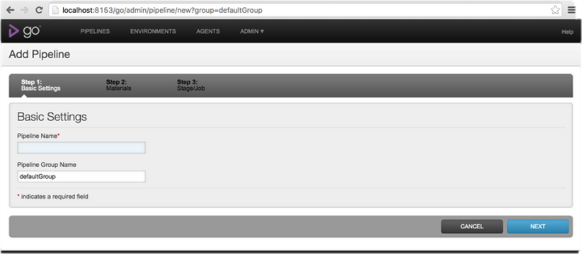
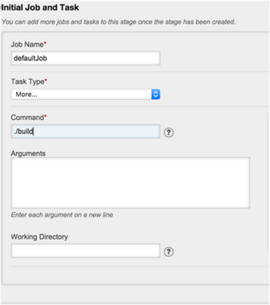
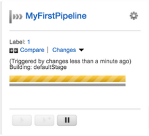

GoCD - Continuous Development
A look at 'go' by Candace Hicks and Kaitlyn Glodde
In this demo, we will demonstrate how GoCD works and how to use it, as well as show GoCD in action. We will show you how you can see how your workflow really works, as well as some code coverage with GoCD. We will also discuss the software required for the use of GoCD, and other helpful programs.
GoCD is an open source software tool that is used for continuous delivery and to visualize complex workflows easily. It allows the user to model complex workflows with its fan-in, fan-out dependency management system.
You can download GoCD from the GoCD website. It is suggested that you use a 64-bit server with a 32-bit agent, so that is what we did. We followed the prompts for installation on both, making sure we bundled JRE instead of specifying the location of our JDK so that there were no future issues for us. The agent can also be found at the same URL. For our agent, we left the URL blank so that the default would be set to the local host. GoCD made it's own icon based on default. We clicked it and it brought up GoCD in Google Chrome. There are three steps listed.
Step 1: Basic Settings - We set up our Pipeline name as CandaceandKaitlyn and the Pipeline Group name as default. Clicked next.
Step 2: Materials - There is an option for material type. Under this, there are several things listed. For example, there is subversion, git, mercurial, etc. For now, we chose Git as the "Material Type" and for the URL, we are using the laravel git repository. GoCD will be looking at the master branch. "poll for new changes" was already marked, so we kept that as default. We then checked the connection to make sure GoCD understood the URL it was given. You can then continue to the next step.
Step 3: Stage/Job - Stage name is Stage1. Job Name - defaultJob. We changed the task type to the ./build command and we pressed finish. Pipeline is now made.






The pipeline is paused so that you can change some settings. You can now unpause it for now to see the output. It will slowly try to build. Right now, it is failing... We tried triggering the pipeline but there is something going wrong. I think someone made a change while I was trying to set GoCD up and run and now i am getting a name for a commit when i check the changes. It shows that last commit by Taylor Otwell and the merge request he put in. Instead of laravel, we decided a repository with relatively no activity would help fix the issue. We are also keeping "poll for new changes" unmarked. This may have caused the failing. Instead, we used derby, which also seemed like it wasn't working. Although goCD works well to describe dependencies on big files, I don't think it is practical for this project considering how slow my computer is. We are going to try another repository yet again. goCD has been running derby for about 2 hours on my computer. It is still in progress. Our third trial will be akuron. It was last updated in Feb. of 2013 and it is a relatively small project.
GoCD is useful for large files. It will show you mapping between different files. This is important when you want to see what relies on something else. The pipeline will execute each file based on the hierarchy and you are able to see which files are children to parents. You are also able to see exact git commits made by someone at a certain time and see the product growing over time. It gives you a lot of visibility into who's doing what.
Top level pipelines can execute in parallel. An agent helps execute. In theory, you should want more agents for parallelization. If you only have one agent, this means that all processes will be waiting until the agent is done with it's current process. For our purposes, we have only downloaded one agent to see everything done one after another. Using extra agents can also cause problems - such as if agent 1 tries to run "stage 1" and agent 2 tries to run "stage 2", it will most likely not work because agent 1 and 2 are not given the same information. While building your pipeline with GoCD, children will execute based on their hierarchy. You may start with a green value stream, meaning that everything is "good to go" but it may change once you reach a certain part of the pipeline. You can have a yellow value stream or a red value stream. Yellow means that it is building and red is failing. When something fails, it will not tell you directly, you will have to go and dig in to the problem yourself.
We do not claim the pictures as our own. Pictures were taken from the following sites:
Background Picture - http://www.rgbstock.com/photo/n2UtdJe/Rainbow+Gradient+Background Unicorn Gif - http://animal-jam-clans-1.wikia.com/wiki/File:Unicorn.gif GoCD Logo - https://brandfolder.com/twproducts/#!asset/o4ltkt-25kv7k-ai0s3j
{kind=link}